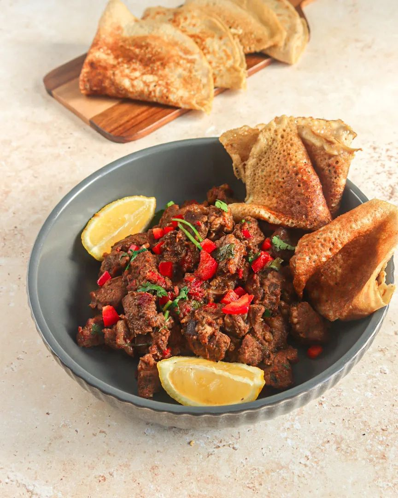

Curated by Onyx
A Curated Journey Through Four Nations — Curated by Onyx
Watch Our Introduction

From Kigali's booming restaurant scene to international food festivals, isombe and grilled brochettes are earning global recognition as Rwanda's culinary identity flourishes.
Read More ›
South Africa's braai transcends race, class, and culture. National Braai Day unites millions around open wood fires — a ritual of belonging that defines the nation.
Read More ›
The aromatic Somali spice blend xawaash — cumin, coriander, cardamom, and cinnamon — is winning fans in kitchens worldwide as Somali food culture gains global visibility.
Read More ›
Ghana's kelewele stalls and waakye morning spots are being celebrated by chefs worldwide as Accra becomes a landmark global food destination to watch.
Read More ›